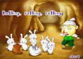
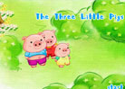
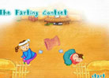
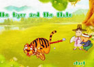
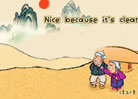
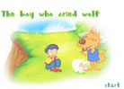

同步单词 扩展单词 情景对话 每日英语 课外读物 语 音 歌 曲 游 戏 英语词典 我的生词本 34本有声故事书  Rolling,rolling,rolling,rolling,rolling 有声故事书34-1有声故事书34-1 The little Green Frog 有声故事书34-2  The Three Little Pigs 有声故事书34-3  The Farting Contest 有声故事书34-4  The tiger and the flute 有声故事书34-5 The little Green Frog 有声故事书34-6  The Three Little Pigs 有声故事书34-7  The Three Little Pigs 有声故事书34-8 首页 上页 1 2 3 下页 尾页 第1-10页 共34页 人生短篇专辑 世界上最美丽的英文 序号 名称 浏览数 好评数 评论数 1 人生短篇 世界上最美丽的英文Ⅰ网页 1906 32 32 2 第一篇：A Grain of Sand音频 739 31 31 3 第二篇：Love Your Life音频 544 34 2 4 第三篇：These Things Shall Never Die音频 776 3 2 5 第四篇： Think it over……音频 78 33 23 6 第五篇: Virtue音频 54 3 3 7 第六篇: The country Maid and Her Milk 74 7 3 8 第七篇:The Rainy Day音频 14 7 1 9 第八篇： Love音频 1 1 1 10 第九篇： On the Feeling of Immortality in youth音频 7 4 3 首页 上页 1 2 3 下页 尾页 第1-10页 共34页 语言工具 汉语字典 英语词典 剑桥词典|朗文词典|卫视词典 每日单词 few /fju:/ 发音 pron. 不多；少数|a. 不多的；少数的|a. 不多的；少数的 [详解] 加入生词本 每日听力 1. 发音 查看答案 2. 发音 查看答案 每日翻译 1. We can't go out because of the rain.longlong.. 查看答案 2. We can't go out because of the rain.longlong.. 查看答案
 安卓版
安卓版 苹果版
苹果版